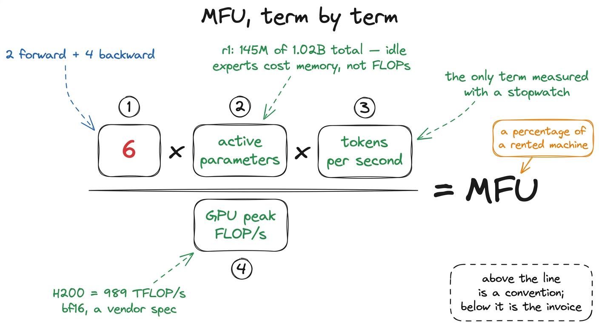
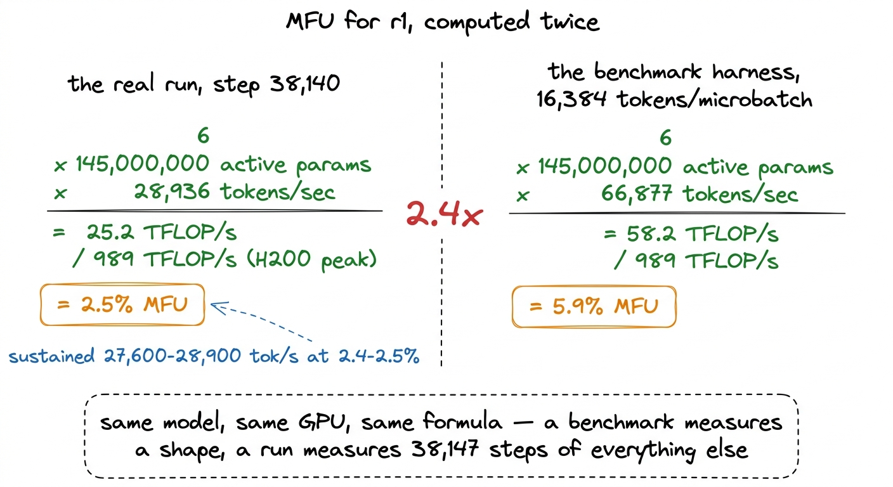
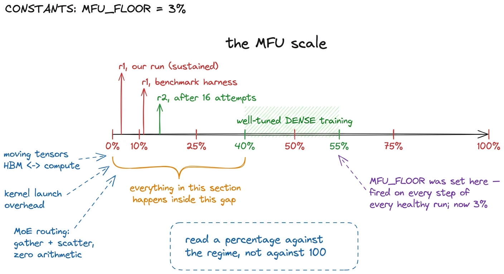
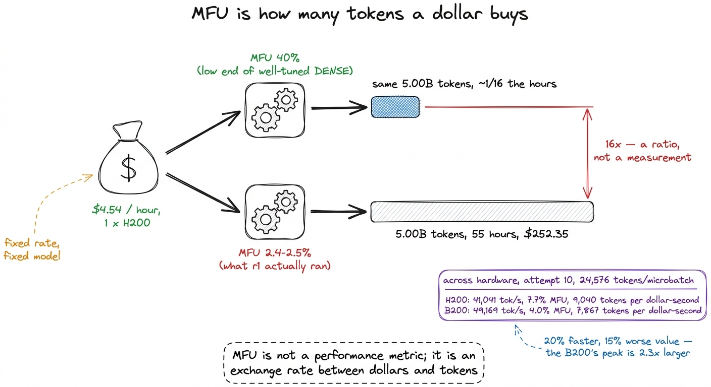
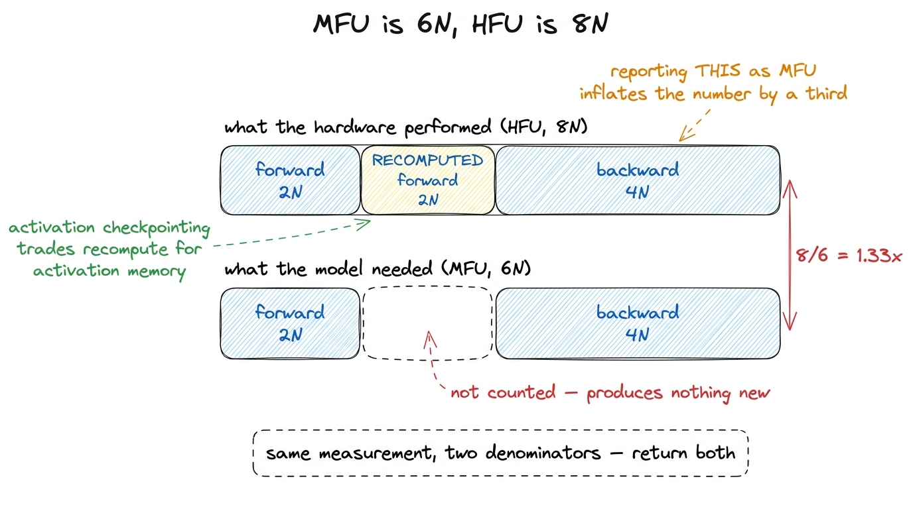
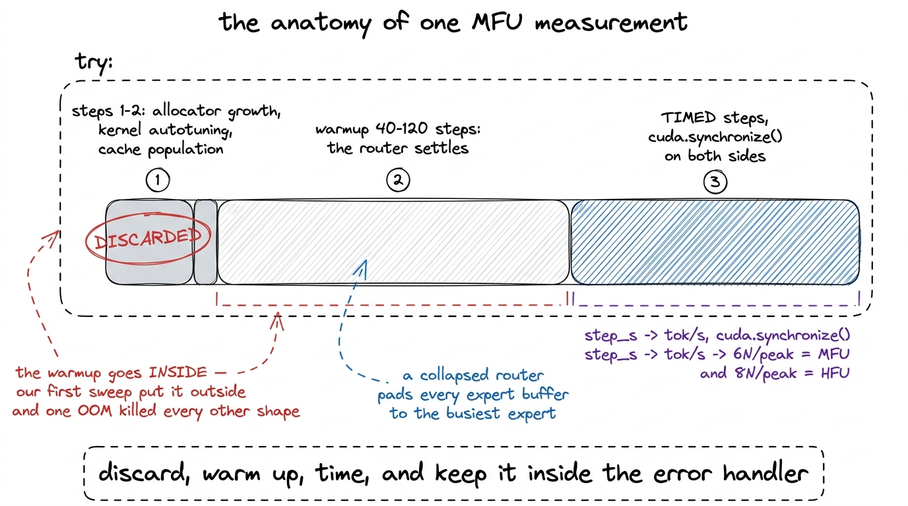
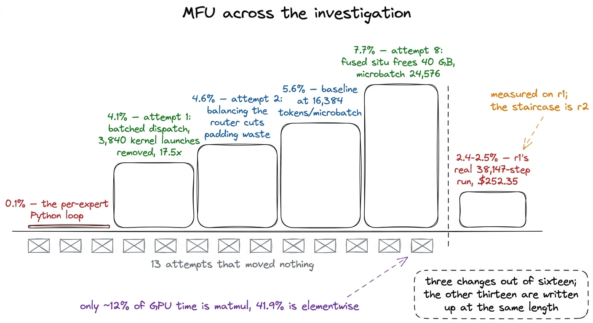

What MFU is, and why it is the exchange rate
Model FLOPs Utilization from first principles, the four ways a measurement fools you, and the arithmetic that turns a percentage into a training budget.
A GPU is rented by the hour and used by the arithmetic operation. Those two units are not the same, and the ratio between them decides whether a fixed budget buys five billion training tokens or fifty. That ratio has a name, Model FLOPs Utilization, and this section of the book is six chapters about moving it.
This chapter defines it, works one example with our own run's numbers, and covers the four ways the measurement will fool you. All four cost us time.
The definition
Model FLOPs Utilization, usually written MFU, answers one question: of all the arithmetic a GPU is capable of performing, how much did the training actually use?
MFU = (useful FLOPs per second) / (GPU peak FLOPs per second)The denominator comes from the vendor. An H200 performs roughly 989 trillion bf16 floating-point operations per second, and that is the number every measurement in this section is divided by.1 Peak FLOP/s figures are dense bf16 vendor specifications rather than something we measured, and our harness holds one such figure per card type. Because the denominator is per-card, an MFU figure is only comparable against one measured on the same card. The B200's peak is 2.3 times the H200's, which is why the same model at a higher token rate can score a lower percentage there. The chapter on the bigger GPU shows what happens when that rule is forgotten.
The numerator is where the convention lives. Counting the exact number of multiplications a transformer performs is possible but tedious, and it changes every time the architecture does. The standard approximation instead prices the model per parameter per token: six floating-point operations per parameter per token, two in the forward pass and four in the backward pass. Each parameter takes part in one multiply and one add going forward, and the backward pass computes a gradient with respect to the input and a gradient with respect to the weight, which is twice that work again.
So the numerator collapses to a product of three things we already know:
useful FLOPs per second = 6 x active_parameters x tokens_per_secondFor a mixture-of-experts model the word active is doing real work in that expression. Our r1 holds 1.02 billion parameters and 145 million of them participate in any given token, so the numerator uses 145 million. The parameters that sit idle for a token cost memory and cost nothing in FLOPs, which is the arrangement the architecture exists to buy.

figure rendering · The formula, term by term. Only the tokens-per-second term is measuredOne worked example, with our own numbers
At step 38,140 of the completed r1 run — the last full telemetry report before the end — the training loop was moving 28,936 tokens per second on one H200.
Put the three numbers into the numerator:
6 x 145,000,000 x 28,936 = 2.52e13 FLOP/s = 25.2 TFLOP/sDivide by the H200's peak:
25.2 / 989 = 0.0255 = 2.5%Which is the 2.5% the run reported. Across the whole 55 hours, r1 held 27,600 to 28,900 tokens per second at 2.4 to 2.5% MFU. Roughly 97.5% of the arithmetic capability we rented went to something other than arithmetic.
The same calculation on the benchmark harness gives a different answer for the same model on the same card. At 16,384 tokens per microbatch, r1 measured 66,877 tokens per second:
6 x 145,000,000 x 66,877 = 5.82e13 = 58.2 TFLOP/s
58.2 / 989 = 5.9%Both figures are correct measurements of different things. The benchmark measures a shape: one batch, repeated, with nothing else happening. The run measures a schedule, a dataloader reading shards from a network volume, a checkpoint every 100 steps, an evaluation worker, and 38,147 consecutive steps of all of it. We report each as what it is, and never the more flattering one as both.

figure rendering · The same arithmetic applied to our benchmark and to our run, both on rWhy nobody reaches 100%
A GPU at 100% MFU would spend every clock cycle on the multiply-accumulate units, with operands already in registers. Real training spends time on work that is necessary and is not arithmetic: moving tensors between high-bandwidth memory and the compute units, launching kernels, normalising, casting, adding residuals, and in a distributed run, waiting for other cards.
The reference points set the scale any measurement should be read against.
| regime | MFU |
|---|---|
| well-tuned dense training | 40-55% |
| mixture of experts | lower, because routing moves data without computing |
| our r2 after the full investigation | 7.7% |
| our r1 run, sustained | 2.4-2.5% |
A mixture-of-experts model starts at a structural disadvantage rather than an implementation failure. Routing a token to an expert means gathering that token's hidden state out of a contiguous batch, placing it into a per-expert buffer, running the expert, and scattering the result back. None of the gathering or scattering performs a useful floating-point operation, and all of it consumes memory bandwidth. The sparser the model, the larger the ratio of movement to arithmetic, and r1 sends each token to 6 of 256 experts.
Knowing the scale also protects against a monitoring bug we hit later. When the watchdog gained the ability to stop a run automatically, its floor was MFU_FLOOR = 0.20, the figure a healthy dense run might approach. It fired on every step of every healthy run in the project. The floor is now 3%.2 A threshold written from literature rather than from your own measurements is a threshold that has never seen your system. The chapter on monitoring covers the two gates in this project that were actively dangerous the moment they could act, and this was one of them.

figure rendering · Where the numbers in this section sit. The band on the right is what dMFU is the exchange rate between money and tokens
Everything above is definition. This is the part that makes a percentage worth six chapters.
A pretraining budget is denominated in dollars, but what it buys is tokens, and MFU is the rate at which one converts into the other. With the model and the hardware fixed, doubling MFU halves the cost of a fixed token budget, or doubles the token budget at fixed cost.
Our own run gives the cleanest version of that statement. r1 trained on 5.00 billion tokens on one H200 rented at $4.54 per hour, for a total of $252.35, which is about 55 hours of wall clock at 2.4 to 2.5% MFU. At 40% MFU, the low end of what well-tuned dense training reaches, the same token count would have taken roughly a sixteenth of that time and cost roughly a sixteenth of that money. That is arithmetic on a ratio rather than a measurement, and it assumes a version of this model that does not exist. It does describe what the gap is worth.
The flagship, planned for two B300s at $7.10 per hour each, would have paid the same rate on a larger bill. Two extrapolations from our own measurements disagree about what it would have scored: the size fit taken over r1 and r2 with the optimisations in place gives active^0.35 and projects 12.5%, while the earlier fit in attempt 3 gives active^0.39 and projects 2.3%. Both are extrapolations from a handful of points rather than measurements, and we quote them as such. The distance between them is the point. A factor of five in utilisation is a factor of five in tokens bought, and token count is one of the two quantities that decide what a model of a given size ends up knowing.
The exchange rate also runs across hardware, not only across code. Attempt 10 rented a B200 for the same 24,576-token microbatch that gave r2 41,041 tok/s at 7.7% MFU on an H200. The B200 returned 49,169 tok/s at 4.0% MFU: 20% more throughput against a peak 2.3 times larger. Priced per dollar-second, the H200 delivered 9,040 tokens and the B200 7,867, so the slower card was 15% more cost-efficient. An MFU investigation is therefore not performance engineering bolted onto a research project; it is the project's budget line.

figure rendering · The same money and the same model at two utilisations, and the same miMeasuring without fooling yourself
Before optimising anything, the measurement has to be trustworthy. Four mistakes cost us real time, and each one produces a number that looks plausible.
Discard the first two steps. The opening steps of any measurement include one-time costs that will never be paid again: the caching allocator growing to its working size, kernels autotuning against shapes they have just been handed, caches populating. Averaging those in reports a step time no subsequent step will match. Our benchmark drops the first two timed steps and averages the rest.
Warm up long enough for the router to settle. This one is specific to mixture-of-experts models, and it is the mistake most likely to be made by someone adapting a dense benchmark. A freshly initialised router collapses, as the chapter on expert collapse describes, and routes almost every token to a handful of experts. The fused dispatch pads every expert's buffer to the size of the busiest one, so a collapsed router produces enormous padding and a step time with no relation to steady state. The benchmark therefore warms up 40 to 120 steps before starting a stopwatch, and it returns the load imbalance measured at the moment of timing alongside the MFU, so a measurement taken on an unsettled router is visible in the output rather than hidden in it.
Keep MFU and HFU apart. With activation checkpointing, the forward pass is recomputed during the backward pass so its intermediate activations do not have to be stored. The chip therefore performs roughly 8N floating-point operations per token instead of 6N. That extra 2N is work the hardware really did, and it is not useful work, because it produces nothing the model did not already have. Hardware FLOPs Utilization, HFU, is the 8N figure; MFU is the 6N figure. Reporting HFU as MFU inflates the number by a third. Our benchmark returns both, from the same measurement, in the same dictionary.

figure rendering · The two utilisation figures differ by exactly the recompute.Put the warmup inside the error handler. This is the least interesting mistake and it cost the most. A benchmark sweep walks a list of shapes, and at some shape the batch no longer fits in memory. That is an expected outcome, and the correct behaviour is to record a failure for that shape and continue. Our first sweep placed the warmup loop outside the try block, so the out-of-memory exception from one oversized batch propagated out of the sweep and killed every other measurement with it. An hour of GPU time produced one error message.
The fixed version keeps everything, warmup included, inside the guard:
imbalance = None
times = []
try:
for _ in range(warmup): # 40-120 steps
loss = model(input_ids=ids, labels=ids).loss
loss.backward()
opt.step()
opt.zero_grad(set_to_none=True)
imbalance = balancer_step(model).get("load_imbalance_max")
for i in range(steps):
torch.cuda.synchronize()
t0 = time.time()
loss = model(input_ids=ids, labels=ids).loss
loss.backward()
opt.step()
opt.zero_grad(set_to_none=True)
balancer_step(model)
torch.cuda.synchronize()
times.append(time.time() - t0)
except Exception as e:
return {"which": which, "batch": batch, "seq_len": seq_len,
"error": f"{type(e).__name__}: {str(e)[:400]}"}Two details there matter. The torch.cuda.synchronize() calls on both sides of the timed region exist because CUDA work is asynchronous: without them, time.time() measures how long Python took to queue the work rather than how long the GPU took to do it. And balancer_step runs inside the timed region, because it runs in training too, and a benchmark that omits a per-step cost the real loop pays measures a model nobody trains.
The reduction to a percentage is then four lines:
step_s = sum(times[2:]) / max(len(times) - 2, 1) # drop the first two
tok_s = (batch * seq_len) / step_s
mfu = 6 * active * tok_s / peak
hfu = (8 if checkpointing else 6) * active * tok_s / peak
figure rendering · One measurement, start to finish. The enclosing try block is not optioA fifth discipline is bookkeeping rather than measurement: the benchmark and the training loop must build the same model.3 Ours drifted. For a period the benchmark applied the fused Triton situ activation while the training path did not, so every MFU and memory number described a configuration no run had used. Both now build the model through the same function, and any deliberate deviation from the training configuration is recorded alongside the measurement rather than left implicit.
Where the measurements come from
Every number in this section came from one of two harnesses. The first sweeps a list of shapes and prints one row each of tokens per step, step time, tokens per second, MFU, HFU, peak memory and load imbalance. The second is the kernel profile that ends the investigation, and it gets its own chapter. Both default to r2, the rung above the one this book's run used, because that is where most of this section's work was measured.4 Two attributions that apply to the whole section. Attempts 1 through 15 were measured on r2, 307 million active parameters, on one H200; attempt 16, the fused-dispatch cliff, was measured on the flagship across two B300s, and that model failed at step 890. Also, our MLA runs on an sdpa shim registered under the flash_attention_2 key, because the released modeling code hard-forces that string. It is numerically identical and slower, so every MFU figure here understates what flash attention would give.
Where this section goes
Two numbers frame everything that follows.
The first is 7.7%, which is what r2 reached on one H200 over an investigation of sixteen numbered attempts, of which three worked. Attempts 1 through 15 were all measured on r2; attempt 16 belongs to the flagship on two B300s and is a separate story. The route to 7.7% was not gradual. Attempt 1 found that the expert dispatch was running 3,840 sequential kernel launches per step and replaced it with batched matrix multiplies, which moved MFU from 0.1% to 4.1% in a single change. Reducing padding waste by balancing the router took it from 4.1% to 4.6%, and keeping situ out of float32 added a further 0.1 point. Attempt 8 fused the situ activation into one Triton kernel, which at equal batch size was not faster at all, scoring 5.5% against the 5.6% baseline; what it did was free enough memory for a 50% larger microbatch, and at 24,576 tokens per microbatch the number reached 7.7%. Thirteen other attempts, each with reasoning that looked sound at the time, moved nothing.
The second is 2.4 to 2.5%, which is what r1's actual 38,147-step run sustained. That is the number attached to the $252.35.
Between them sits the finding that explains both, from a profiling run that should have been our first: only about 12% of GPU time was matrix multiplication, and 41.9% was elementwise operations that move data without computing much. A model in that state is memory-bandwidth bound, and the levers that work on a compute-bound model — a bigger batch, more memory, faster attention kernels, lower-precision matmuls — do not apply. We tried all four before we measured. The next six chapters are that story in order.

figure rendering · The trajectory of this section, measured on r2; the bar on the right i